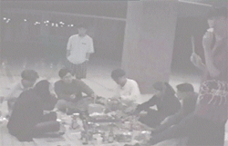

와 한판 벌렸군요. 새로 옮긴 동방이 있는 태을관 일층에서 맛있게 고기를 먹고 있는 미스터인들. 보기만 해도 군침이 도는 동영상(?). 구경해보세요~

때는 2001년의 화사한 봄. 미스터에서 딸기 파티가 열렸습니다. 딸기 파티의 생중계. 테이프가 다되는 바람에 중간에 짤린 동영상이네요. 맨 마직막 짤린 장면은 미스터인들이 모여 MR 을 만드는 장면인데 아쉽네요.(회지 맨 첫화면에 사진 있죠?)